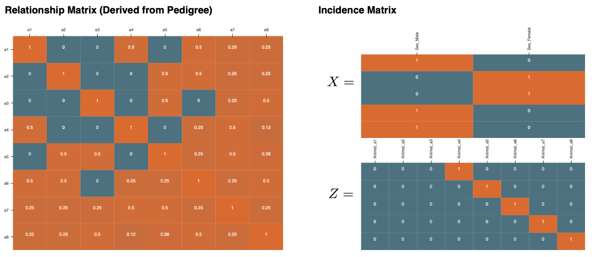
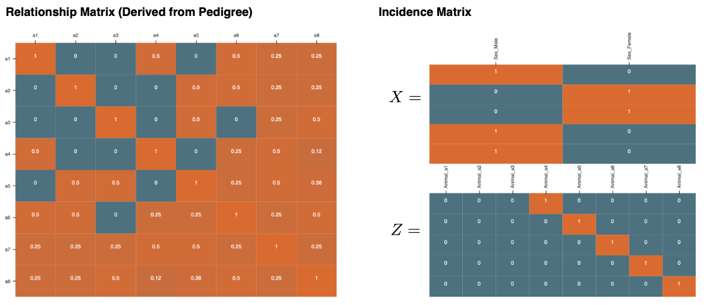

PUBLICATIONS (10) #
First/Co-First Author (5) #
- Chen, C.J. and Zhang, Z. (2020) GRID: A Python Package for Field Plot Phenotyping Using Aerial Images. Remote Sensing, 12, 1697. DOI GitHub Repo. Documentation


-
Liu, L., Zhou, J., Chen, C.J., Zhang, J., Wen, W., Tian, J., Zhang, Z., and Gu, Y. (2020). GWAS-Based Identification of New Loci for Milk Yield, Fat, and Protein in Holstein Cattle. Animals 10, 2048. DOI
-
Zhou, J., Liu, L., Chen, C.J., Zhang, M., Lu, X., Zhang, Z., Huang, X., and Shi, Y. (2019). Genome-wide association study of milk and reproductive traits in dual-purpose Xinjiang Brown cattle. BMC Genomics 20, 827. DOI
-
Chen C.J., Zhang, Z. (2018) GWAS and GS are as easy as clicking and dragging with iPat. Proceedings of the World Congress on Genetics Applied to Livestock Production, Auckland, New Zealand. PDF
-
Chen C.J., Zhang, Z. (2018) iPat: intelligent prediction and association tool for genomic research. Bioinformatics, 34, 1925-1927. DOI GitHub Repo. Documentation


Co-Author (1) #
- Tang, Z., Parajuli, A., Chen, C.J., Hu, Y., Revolinski, S., Medina, C.A., Lin, S., Zhang, Z., and Yu, L.X. (2021). Validation of UAV-based alfalfa biomass predictability using photogrammetry with fully automatic plot segmentation. Scientific Reports 11, 3336. DOI
Under Publication (4) #
- Chen, C.J., Morota, G., and Cheng, H. (2021). Livestock Tracking with Unsupervised Approach.

- Chen, C.J., Garrick, D., Fernando, R., Karaman, E., and Cheng, H. (2021). XSim Version 2: Simulation of Modern Breeding Programs. GitHub Repo. Documentation

- Chen, C.J. and Cheng, H. (2021). LMMonBoard: An Interactive Dashboard for Visualizing Mixed Models in Quantitative Genetics. GitHub Repo. Web-App
-
 

- Chen, C.J., Rutkoski, J., Schnable, J., Murray, S., Wang, L., Jin, X., Stich, B., Crossa, J., Hayes, B, and Zhang, Z. (2021). Harnessing Agronomics Through Genomics and Phenomics in Plant Breeding: A Review. Pre-Print